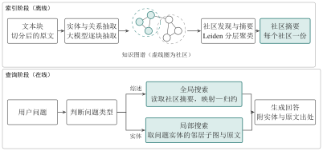

5.5 GraphRAG：当答案藏在关系里
“我们最大的供应商的母公司，去年有没有被处罚？”“这 500 份用户访谈里，大家最不满意的三个环节是什么？”前者要沿着关系跳三次，后者的答案不在任何一段原文里，而在全部文本的归纳中。本节先介绍知识图谱如何用实体和关系表示知识，对比它与向量检索的分工；再讲解 GraphRAG 的索引与查询流程；最后讨论其代价，以及“图＋向量”的混合用法。结论是：向量检索找“像”，知识图谱找“连”，两者互补。
5.5.1 知识图谱：用实体和关系表示知识
知识图谱（Knowledge Graph，KG）把知识表示为由节点和边构成的网络：节点是实体（人、公司、产品、法规条款），边是实体之间的关系（任职于、控股、引用、生效于）。每条事实是一个三元组（主体，关系，客体），例如（张三，任职于，A 公司）、（A 公司，隶属于，B 集团）。检索时，系统先在问题中识别出实体，并把它链接到图谱中对应的节点（实体链接），再沿着边走若干步，把沿途的事实收集起来交给模型组织答案。沿多条边连续推理称为多跳推理（multi-hop reasoning）。以开头的供应商问题为例：先查“采购额最高的供应商”得到 A 公司，沿“隶属于”边找到 B 集团，再沿“受到处罚”边查 B 集团去年的记录——三跳中的每一步都依赖上一步的结果，而向量检索只会在一个平面上找“最像问题的段落”。
把知识图谱和向量嵌入结合起来，可以为检索带来七项能力（表 5-8），它们分别对应第 5.3.1 小节中向量检索的不足。
表 5-8 知识图谱为检索带来的七项能力
| 能力 | 含义 |
|---|---|
| 显式事实 | 事实直接存为节点和边，而不是压缩进不透明的向量，关键细节得以保留 |
| 上下文详情 | 实体带有描述、别名、元数据等属性，提供必要背景 |
| 网络结构 | 关系刻画现实世界中的连接，可以表达规则、层级、时间线 |
| 多跳推理 | 查询沿关系遍历，把来自不同来源的事实连接起来 |
| 联合推理 | 实体解析把指向同一现实对象的不同说法（“苹果公司”“Apple”）合并，从而可以集中分析 |
| 可解释的相关性 | 图中的连接路径说明了某条事实为什么相关 |
| 个性化 | 在图谱中记录用户属性、上下文和历史交互，为不同用户定制结果 |
图谱与嵌入也可以反过来结合：知识图谱嵌入把实体和关系也表示为向量，使“推理”变成向量运算。经典的 TransE 模型[19]要求三元组满足“主体向量＋关系向量 \(\approx\) 客体向量”，据此可以给缺失的三元组打分、推出新事实。图神经网络（Graph Neural Network，GNN）则通过在相邻节点之间反复传递和汇聚信息，为每个节点学到融合了邻居结构的表示。
表 5-9 对比了两种检索方式。
表 5-9 向量检索与知识图谱检索的对比
| 维度 | 向量检索 | 知识图谱检索 |
|---|---|---|
| 检索依据 | 语义相似（“像不像”） | 关系路径（“连不连”） |
| 知识形式 | 文本块的稠密向量 | 实体—关系三元组 |
| 擅长 | 模糊表达、同义改写、长尾问题 | 多跳推理、精确事实、规则约束 |
| 可解释性 | 只有相似度分数 | 可给出推理路径 |
| 构建成本 | 低，嵌入一遍即可 | 高，需要抽取、消歧与维护 |
5.5.2 GraphRAG 的索引与查询
2024 年，微软研究院提出并开源了 GraphRAG[20]，把“用大模型自动建图、再基于图回答”的思路工程化。它针对的是基础 RAG 很难回答的全局性问题，例如“这批文档的主要主题是什么”——答案分散在整个语料中，取前 20 个片段拼起来也只能看到局部。其流程分为两个阶段（图 5-4）。
索引阶段 输入是切分好的文本块，输出是知识图谱与分层社区摘要。
抽取：用大模型逐块抽取实体、关系及其描述，合并同名实体，建成一张图；
社区发现：用 Leiden 算法[21]把图划分成若干社区——内部连接紧密、与外部连接稀疏的实体簇，并逐层细分，形成从粗到细的层级；
社区摘要：让大模型为每个社区写一份摘要，概括其中的主要实体、关系与事件。
查询阶段 根据问题类型选择两种搜索方式。全局搜索面向综述型问题：先让模型分别依据每份社区摘要给出部分答案（映射），再把部分答案汇总成最终回答（归约），这种做法称为映射—归约（map-reduce）。局部搜索面向具体实体的问题：从问题中的实体出发，取出它在图中的邻居子图、相关社区摘要和原始文本块，作为上下文交给模型。

图 5-4 GraphRAG 的索引与查询。索引阶段用大模型从文本块中抽取实体与关系建成知识图谱，再分层聚成社区并为每个社区写摘要；查询阶段按问题类型走全局搜索或局部搜索
5.5.3 代价与适用场景
GraphRAG 的代价很实在：
建图开销大：每个文本块都要调用大模型抽取，社区摘要还要再调用一轮，索引成本与语料规模成正比，远高于只做嵌入；
实体消歧难：“苹果”是水果还是公司，“张总”是张建国还是张建华，抽取模型常常判断错；
更新困难：文档一变，相关子图和社区摘要可能都要重建；
错误会传播：抽取错了的一条边，会沿着多跳推理影响后续每一步。
因此，它适合关系密集、问题多跳、对可解释性要求高的场景，如供应链分析、反欺诈、医疗与科研文献、合规审计，以及需要融合结构化与非结构化数据、降低幻觉的垂直领域；对简单的客服问答则得不偿失。
一个务实的做法是图与向量混合：先用向量检索找到问题相关的入口实体，再在图中扩展其邻居，最后把子图和原文一起交给模型。这样既保留了语义召回的广度，又补上了关系推理的深度。图谱也可以在使用中持续改进：分析用户与系统的交互，发现缺失或错误的边并修正。
5.5.4 统计学习与符号表示
GraphRAG 背后还有一个更一般的问题。深度学习的主流是连接主义：知识分布在大量参数中，靠统计规律泛化，主张智能可以从数据中学习得来，而不必依赖人工设计的符号规则。符号主义则认为，智能需要显式的符号、规则和结构。RAG 尤其是 GraphRAG 的实践给出了一种折中：大模型（统计学习）负责理解和生成语言，知识图谱（符号表示）负责记住事实、约束关系、提供可解释的推理路径。二者单独都不足以支撑可靠的语言智能，结合起来则可以互相弥补弱点。